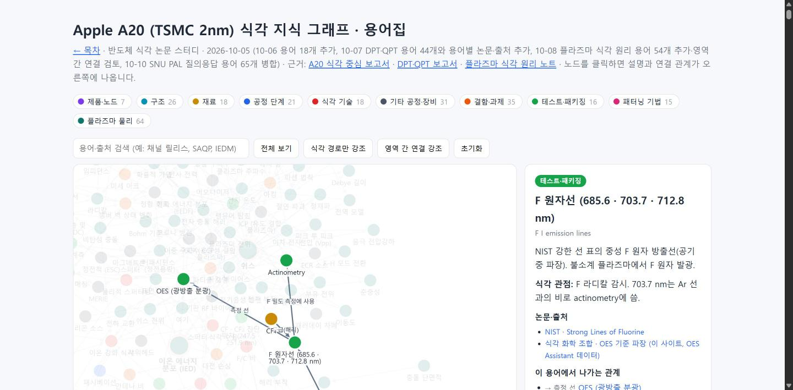
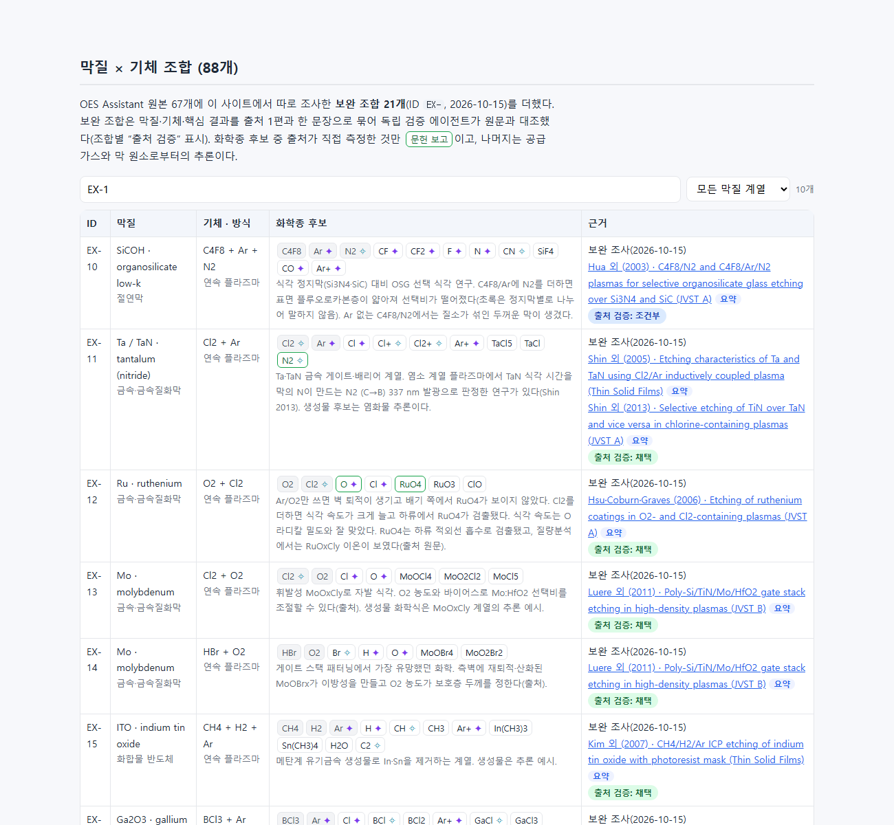

항목 #46–#47, #54–#55 · 2026-10-11 22:03 ~ 10-15 20:35 · 별도로 만든 OES 분석 앱의 식각 화학·파장 데이터를 검증해 이 사이트에 합친다.
#46
OES Assistant 프로젝트 데이터 검토 · 병합
지시 (원문)
oes_assistant 폴더 확인 할 것. 해당 폴더의 데이터 확인 후 지금 프로젝트에 merge 가능한 지 검토 후 실행하라.
분석 (Claude의 정리)
작업 폴더에 복사된 oes_assistant는 별도 git 저장소인 웹 앱(FastAPI 서버 + OpenAI API 호출)이다. 레시피를 넣으면 생성 화학종을 추론하고, 출처가 확인된 OES 기준 파장을 연결한다. 이 사이트는 정적 GitHub Pages라 서버 앱은 동작하지 않는다.
합칠 수 있는 것은 앱이 기준으로 쓰는 정리된 데이터다: 막질×공급 기체 조합 67개(막질 29, 화학종 109), OES 기준 파장 12종 40선(NIST 표·논문 1편), 출처 26개. 위키 문서 259개는 모두 "가져왔으나 미재검토" 상태라, 새 사실로 넣기 전에 검증이 필요하다.
앱 코드, 키 파일(.env 등), 가상환경·배포 작업 폴더(약 234MB)는 합치지 않고 열지도 않는다.
과정
폴더 확인: README, 데이터 8개, 위키 파일 274개, 앱·테스트 코드. 기존 그래프와 겹치는 용어는 CF₄·Cl₂·c-C₄F₈·SiO₂·Al·Cu·low-k 정도이고, OES·Actinometry 노드는 이미 있다.
jev 자문 3건. 모두 반영.
· 병합 방식: 코드는 넣지 않고 데이터만 정적 페이지로, 파장은 원문 대조, 조합은 "추론 후보" 표시 유지, 그래프에는 핵심만 노드로 (선택 b, 확률 0.98, 신뢰도 0.97)
· 공개 전 검증 필요 → 0.85(예)
· 원래 저장소는 그대로 두고 복사본은 커밋하지 않음 → 0.79(예)
파장 검증: NIST 원소별 표 8개와 논문 PDF를 받아 40개 값을 기계적으로 대조했다. 처음에는 32/40 일치. 불일치 8개는 원문이 끝자리에 0을 붙여 쓴 것(예: 3092.710 Å)이어서, 비교 방식을 고쳐 40/40 일치를 확인했다.
조합 출처 검증 (리서치 검증 체계 적용)
· 출처마다 하나씩 무작위로 뽑은 표본 10개를 주장 장부에 등록 (lint 오류 0)
· blind 입력을 독립 검증 에이전트(웹만 사용, 로컬 파일 접근 없음)에 전달, 약 2.5분
· 결과: 지지 8 · 부분 지지 2 · 반박 0 → gate: 채택 8, 조건부 2
· 부분 지지 2개: SF₆+C₄F₈+Ar의 Si (출처 페이지에는 SF₆만 명시), Cl₂+BCl₃+Ar의 GaN (초록에 Ar 없음)
· 처음 기록할 때 판정 값을 잘못 적어(partial) 2건이 무시되어, 올바른 값으로 다시 기록했다.
정적 페이지 생성 도구 tools/oes_page.py를 작성해 research/oes_etch_chemistry.html를 만들었다. 페이지 구성:
· 해석 범위
· 기준 파장 표 (원문 링크)
· 조합 67개: 검색·막질 계열 필터, 화학종을 공급 가스·추론·문헌 보고로 구분, 파장이 있는 종 표시, 표본 검증 결과 표시
· 검증 절, 출처 26개
화면을 확인하다가 파장이 6자리로 반올림되어 보이는 문제(703.7469 → 703.747)를 발견해, 원래 값 그대로 표시하도록 고쳤다.
지식 그래프 병합
· 새 노드 6: SF₆·HBr·BCl₃ 기체, F 원자선·CF/CF₂·CO 진단 위치
· 새 관계 13: 예) SF₆·CF₄ → F 원자선 "F 공급(해리)", F 원자선 → Actinometry, BCl₃ → Al·high-k "식각"
· 노드마다 출처(NIST·논문·장비사)와 새 페이지 링크
· 용어 245 → 251, 관계 528 → 541, 끊어진 관계 0. 목차에 새 페이지 추가.
브라우저 확인
· 새 페이지에서 "SF6" 검색 → 조합 7개, 조건부 표본 표시 정상
· 그래프 251·541 렌더링, 오류 없음, "F 원자선" 패널에 NIST 출처와 관계 표시
· 한 탭에서 화면 캡처가 계속 멈춰 새 탭에서 다시 찍었다.
커밋·푸시 → Pages 빌드 완료, <계정>.github.io/etch-paper-study/의 새 페이지·10단계 기록·그래프 모두 200 확인.
결과 / 증거
성공 OES Assistant의 데이터를 읽기 전용 페이지로 옮기고(조합 67개, 파장 40선 원문 대조 완료), 지식 그래프에 식각 기체 3개와 OES 파장 3묶음을 연결했다. 조합 출처 표본 10개를 독립 검증한 결과는 채택 8, 조건부 2다. 원래 앱 저장소와 복사 폴더(merge_src/)는 건드리지 않았고 커밋하지 않았다.
history_img/20261011_221801_oes_combos_sf6.png — 조합 표에서 "SF6" 검색: 화학종 후보(공급 가스·추론·문헌 보고, ✦는 기준 파장 있음), 출처, 표본 검증 결과(지지·부분 지지)

history_img/20261011_221828_graph_oes_f_line.png — 지식 그래프의 새 노드 "F 원자선": OES·Actinometry·CF₄와 연결, 출처는 NIST 표와 새 페이지
#47
OES 데이터 보완 조사 — 원자선·분자 방출·종말점 검출·actinometry
지시 (원문)
OES 관련 데이터를 좀 더 조사해서 보완해줘.
분석 (Claude의 정리)
#46에서 옮긴 기준 파장은 12종 40선뿐이다. 조합 표의 화학종 중 약 70종(SiF·SiCl·BCl·AlCl·CN·N₂·OH·Br·Ga·Ti 등)은 기준 위치가 없다.
보완할 것은 네 가지다: ① 빠진 원자·이온 선 ② 분자 방출 위치 ③ 실제 식각에서 OES를 어디에 쓰는지(종말점 검출 사례) ④ actinometry 선 쌍과 그 한계.
리서치 검증 체계(semi-research)를 따른다: 수집 → 주장 장부 → 독립 검증 → 규칙 채택. 기억으로 파장을 만들지 않고, 원문에서 확인한 값만 쓴다.
과정
빈칸 분석: 조합 표 화학종 중 기준 파장이 없는 것을 등장 횟수 순으로 정리(Cl⁺·Cl₂⁺ 26, SiF₄ 23, BCl 18 …). 수집 두 갈래를 동시에 시작: astra(high, 웹 검색)에 화학종별 방출 위치·종말점 사례·actinometry·겹침 조사, paper-scout 에이전트에 중립 질문으로 출처만 수집.
원자·이온 선: NIST 원소별 강한 선 표 15개를 받아, 200–900 nm에서 상대 세기 상위 4개를 기계적으로 뽑음(Br·Br⁺·Ga·In·Ti·Cu·W·Hf·B·C·S·He·Cl⁺·O⁺·As·Cr, 16종). 처음엔 표 머리글을 못 찾아 0개가 나왔고, He처럼 미세 구조 성분이 겹쳐 뽑히는 문제도 있어 1 nm 안 중복을 빼도록 고침.
astra 결과: 원문에서 확인한 값만 표로 정리하고, 확인 못 한 종(HCl⁺·Br₂·SF·S₂·InCl·WF)은 "미확인"으로 남김. CF₃ 614 nm 연속 발광은 귀속이 가설이라 제외. paper-scout는 출처 30개와 빈칸 목록을 돌려줌.
주장 장부ledger/oes_supplement.json에 38개 등록(분자 방출 19, 종말점 사례 10, actinometry 6, 가까운 선 3) → lint 오류 0. 출처 URL 확인: 27개 중 정상 21, 자동 접근 차단 6(ResearchGate·출판사).
독립 검증: blind 입력을 세 묶음으로 나눠 claim-verifier 에이전트 3개에 동시에 맡김(웹만 사용, 작성 과정은 모름). 23:01까지 결과 수신 → gate: 채택 28 · 조건부 1 · 보류 9. 보류는 대부분 원문을 열 수 없어서였다(ResearchGate 403, 스캔 PDF, 10MB 넘는 PDF).
보류 항목을 위해 paper-scout에 "자동 접근으로 전문이 열리는 출처"를 다시 수집하게 함(특허 전문, 저장소 사본, arXiv 등).
보류 8개의 근거를 열리는 출처로 바꾸거나 주장을 원문 범위에 맞게 좁혀 고침(예: Al 396 nm 종말점 → Cl₂/BCl₃ Al 식각 특허, O 원자 actinometry → 저장소 공개 논문 2편, H 원자 → arXiv 저자본). 새 사례 1개(질화막이 걷힐 때 CO 519.8 nm 증가) 추가. 주장을 고치면 이전 판정은 자동 무효 → 9개 재검증: 지지 8, 부분 지지 1.
도구: tools/oes_supplement_build.py(NIST 추출 + 장부의 채택·조건부만 묶어 tools/oes_supplement.json로), tools/oes_page.py에 보완 절 5개 추가(원자선, 분자 방출, 종말점 검출, actinometry, 가까운 선). 조합 표에서 보완 위치가 생긴 화학종은 ✧로 표시.
최종 gate: 채택 36 · 조건부 2 · 보류 1(SiCl 287–288 nm, 열리는 원문이 없음 → 싣지 않음). 조건부 2개는 확인된 부분과 미확인 부분을 표시에서 구분(Cl/Xe 선 쌍, CF₃Br 사례는 "원문 미확인").
지식 그래프: 종말점 신호 노드 3개(SiF 440 nm, CN 387–388 nm, Al 396 nm)와 관계 10개 추가. 기존 CO·F 노드도 식각 종말점 검출(EPD)에 연결. 용어 251 → 254, 관계 541 → 551, 끊어진 관계 0.
브라우저 확인: 종말점 검출 표에 판정·검증 메모·출처 표시 정상. 그래프 254·551 렌더링, 오류 없음, EPD 패널에 새 출처 표시. 그래프 화면 캡처가 한 번 멈춰 다시 찍음.
커밋·푸시 → Pages 빌드 완료, <계정>.github.io/etch-paper-study/의 식각 화학·OES 페이지(보완 절 포함)·그래프·10단계 기록 모두 200 확인.
history_img/20261011_232100_graph_epd_signals.png — 지식 그래프의 식각 종말점 검출(EPD) 노드: 새 노드 SiF 방출·CN 방출·Al 원자선과 기존 CO·F 노드가 종말점 신호로 연결됨
#54
OES 식각 화학 조합 보완 — 막질×기체 17개 추가
지시 (원문)
OES 관련 데이터 조합
더 다양한 막질 ETCHANT 조합 필요
분석 (Claude의 정리)
대상은 식각 화학 조합 · OES 파장 페이지의 막질×공급 기체 조합 67개다. 이 조합은 별도 비공개 앱(OES Assistant)의 데이터에서 온 것이다.
로직·메모리 공정에서 많이 쓰지만 빠진 조합이 있었다.
· 막질: SiGe(GAA 채널 릴리스), Ge, Mo·Ru·TaN(차세대 배선·게이트 금속), ITO, Ga2O3
· 화학: 원격 NF3 계열(질화막 등방성 식각, Siconi 세정), C4F6(고종횡비 컨택), CH3F/O2(질화막 스페이서), O2/COS(탄소 하드마스크), N2/H2(유기 low-k)
문제가 하나 있었다. OES 페이지 생성기(tools/oes_page.py)는 #47 때의 파장·조합 검증 결과 파일이 있어야 돌아가는데, 이 세션에는 그 파일이 없었다.
과정
현재 페이지의 표에서 파장 검증 40선(40선 일치)과 조합 표본 검증 10건을 역으로 뽑아 비공개 data/oes/에 복원했다. 생성기를 다시 돌린 결과가 기존 페이지와 한 글자도 다르지 않음을 확인했다. 이로써 생성 경로가 복원됐다.
astra(high, 백그라운드)에 후보 15개의 출처와 OES 관측 화학종 조사를 맡겼다. 같은 시각 jev에게 물었다.
· 저장 위치: 이 사이트 원본에 따로 둔다(0.77)
· 범위: 출처가 확인되는 것 전부(0.71)
· 기록 단계: 10단계에 이어서(0.75)
모두 따랐다. 비공개 앱 데이터는 건드리지 않았다.
lit_search.py 15개 질의로 후보를 찾고 OpenAlex로 초록을 확인했다. W/NF3 후보는 확인한 초록이 NF3 자체를 명시하지 않아 뺐다. 출처 15편, 조합 17개를 골랐다.
· SiO2: C4F6/O2/Ar, Siconi NF3/NH3
· Si3N4: CH3F/O2, 원격 NF3/O2, 원격 NH3/NF3
· SiGe: CF4/O2, CF4/N2
· Ge: Cl2/N2
· 비정질 탄소: O2/COS
· 유기 low-k: N2/H2
· SiCOH: C4F8/Ar/N2
· Ta·TaN: Cl2/Ar
· Ru: O2/Cl2
· Mo: Cl2/O2, HBr/O2
· ITO: CH4/H2/Ar
· Ga2O3: BCl3/Ar
원본 kb/oes/combos_extra.json(공개)을 새로 만들었다. 조합마다 막질, 기체, 방식(원격·이온 차단 방식 추가), 출처, 화학종 후보, 출처의 핵심 결과를 적었다.
· 화학종 후보 중 출처가 직접 측정한 것만 "문헌 보고"로 표시했다. 예: NF3/O2 원격의 F·NO, Ru의 O·RuO4, N2/H2의 H·N·NH3. 나머지는 공급 가스와 막 원소에서 나온 추론이다.
· 고체 염((NH4)2SiF6 등)은 기상 발광 대상이 아니라고 적었다.
장부 2개를 만들었다.
· ledger/oes_extra.json: 조합마다 "출처가 이 막질을 이 기체로 식각했고 핵심 결과가 이렇다"는 문장 17개
· ledger/papers_summary.json: 출처 논문 15편의 요약 문장(#51 규칙)
처음에 일부 논문의 근거를 "공개 원문"으로 적었다. 실제로 본 것은 초록이나 서지 정보뿐이어서 바로 고쳤다. lint 오류 0, DOI 15개 실재. 검증자 4개에 34문장을 출처별로 묶어 넘겼다.
그동안 생성기를 고쳤다. kb/oes/combos_extra.json과 그 검증 상태(kb/claims/oes_extra.json)를 읽어 조합 표에 합치고, 조합마다 "출처 검증" 표시를 단다. 보류·제외된 조합은 싣지 않는다. 검증 현황 페이지에 OES 보완 절을 추가했고, 목차 설명은 조합 84개로 고쳤다.
검증 결과(gate):
· 조합 17개: 채택 14, 조건부 3
· 논문 요약 17편: 채택 14, 조건부 3
조건부 지적은 그대로 반영했다.
· Cho 2012: 막 두께는 "1nm 미만"이 아니라 "약 10Å"으로 적는다.
· Hua 2003: 선택비 저하는 초록에서 정지막 전반으로만 말한다.
· Raynal 2020: 습식과 Siconi를 비교한 것이 아니라, 습식 산화막 뒤 Siconi를 잇는 한 묶음의 순서를 평가했다. 일반 지식으로 덧붙였던 "염 승화" 설명은 뺐다.
Ta·TaN과 ITO는 초록이 없어 제목 수준까지만 적었다.
OES 페이지를 다시 만들었다(조합 67 → 84). 새 출처 15편의 "요약" 링크도 자동으로 붙었다. 이어서 build했다.
· 검증 현황: 주장 182개
· 논문 요약: 90편
링크 검사와 요약 연결 검사(빠진 곳 0)를 통과했다.
스크린샷 2장을 찍었다(?q=EX- 필터, 검증 현황 OE 절).
astra 조사는 이 시점까지 끝나지 않았다. 출처 선택은 직접 문헌 검색과 독립 검증만으로 진행했고, astra 결과가 오면 이번 출처와 비교해 차이를 이 항목에 덧붙이기로 했다.
1차분(84개)을 커밋·푸시했다. site-check와 Pages가 성공했고, OES 페이지 200을 확인했다.
astra 결과를 받았다. OES·질량분석으로 실제 관측한 화학종이 있어 2차 보완을 했다. 주장 9개와 논문 요약 6편을 검증했다.
· 조합 주장: 채택 5, 조건부 4
· 논문 요약: 채택 5, 조건부 1
새 조합 4개: Ge/Cl2(GeCl 약 339·350 nm 관측), Mo/SF6+O2(질량분석 MoFn⁺), W/NF3(3D NAND 측면 식각), 감광막/원격 H2+N2
기존 조합 5개 근거 보강: ACL의 CS 257 nm·O·CO(COS 유무 두 조건 비교), TaN의 N2 337 nm 종말점, CH3F/O2 빔 질량분석의 H2·HF·CO·CO2, Ru의 RuO4 적외선 검출, Siconi의 (NH4)2SiF6 승화
조건부 지적은 설명에 반영했다. MoOFm⁺는 확정되지 않아 추론으로 남겼고, W의 온도 효과는 "문턱 압력 감소"로 고쳤다. 최종 조합은 88개(보완 21개)다. 2차분 커밋·푸시 → site-check·Pages 성공, OES 페이지 200 확인(다음 지시 시작 시점인 20:13에 확인).

history_img/20261015_173457_oes_extra_round2.png — 2차 보완 뒤 조합 표(88개): TaN의 N2 337 nm, Ru의 RuO4 등 출처 측정 화학종 표시
결과 / 증거
성공 식각 화학 조합이 67개에서 84개가 됐다. 새 막질 SiGe·Ge·Mo·Ru·Ta/TaN·ITO·Ga2O3·유기 low-k를 넣었고, 기존 막질(SiO2·Si3N4·SiCOH·비정질 탄소)에는 원격 NF3 계열·C4F6·CH3F/O2·O2/COS·C4F8/N2 화학을 더했다. 보완 조합은 모두 출처 1편과 핵심 결과 한 문장으로 묶어 독립 검증을 받았다(채택 14, 조건부 3).
원래 앱 데이터(비공개 저장소)는 바꾸지 않았다. 보완분은 이 사이트 원본 kb/oes/에 따로 두고 페이지를 만들 때 합친다.
생성기 입력(#47 검증 결과)을 현재 페이지에서 복원해, 앞으로 OES 페이지를 다시 만들 수 있게 됐다(비공개 data/oes/).
남은 한계:
· 화학종 후보는 대부분 추론이고, 출처가 직접 측정한 것은 일부다.
· Ta·TaN과 ITO 조합은 출처 제목 수준의 근거다.
조합 표에는 화학종 후보와 "기준 파장 있음(✦)·보완 위치 있음(✧)" 표시만 있었고, 실제 파장은 위쪽 별도 표에서 찾아야 했다. 조합마다 각 화학종의 관련 파장을 한 칸에 모아 보여 준다.
근거 없는 화학종이 102종(등장 478건)이었다. 상당수는 안정 분자·이온·고체 생성물이다. 발광 감시에 쓰일 만한 것만 근거를 찾아 채운다. 원자는 NIST 표에서 기계적으로 뽑고, 분자 밴드는 독립 검증을 받는다.
과정
직전 배포(#54 2차분)의 CI·Pages 성공과 페이지 200을 확인했다. 조합 88개의 화학종 중 근거 있는 파장이 없는 것을 집계했다.
원자선: NIST 원소별 강한 선 표(robots 제한 없음)에서 Ge·Mo·Ru·Ta·Au·Pt·Sn·Zr·P 9종을 #47과 같은 규칙으로 뽑았다(공기 중, 200–900 nm 중성 원자선 상대 세기 상위 4개, 1 nm 안 중복 제외). 기본 요청이 403으로 막혀 요청 헤더를 바꿔 받았다. Ge I 28선 중 200–900 nm 21선이 모두 파싱됐는지 확인했다.
생성기(tools/oes_page.py)에 조합 표의 "관련 OES 파장" 열을 추가했다. 화학종마다 근거 종류를 색으로 나눴다.
· 보라: 기준 파장(원문 대조 완료)
· 청록: 보완 원자선·분자 위치
· 초록: 그 조합의 출처가 직접 측정한 값. Ge/Cl2의 GeCl 339.3·350.2 nm, O2/COS의 CS ≈257·O·CO, TaN의 N2 337 nm
근거가 없는 화학종은 "기준 없음"으로 따로 적었다.
astra(high)로 분자 밴드 조사를 시작했는데, 사용 한도에 걸려 중단됐다. 20:21에 범위를 좁혀 다시 실행해 결과를 받았다.
조합에 실제로 나오는 분자 7종을 장부 ledger/oes_bands.json에 올리고, 출처 논문 요약을 함께 독립 검증했다.
· 대상: NO γ, NH, SiCl, S2, O2⁺, H2 Fulcher-α, SO
· gate: 채택 4(NO 약 236 nm, S2 242–461 nm, O2⁺ 제1음성대 529.5·563.2·602.6·641.9·685.6 nm, SO 240–400 nm), 조건부 3(NH, SiCl, H2)
조건부 3개는 핵심인 파장 값이 출처에서 확인되지 않았다는 지적이었다. 그래서 gate 판정과 별개로 페이지에 싣지 않았고, 그 출처 논문 요약 3편도 넣지 않았다.
범례 초안에 "안정 분자는 특징적 방출이 약하다"는 일반론을 적었다. 검증하지 않은 문장이라 지웠다. 소수 첫째 자리로 반올림하면 겹치는 선(O 777 nm 세 선 등)은 한 번만 보이게 했다.
build·점검 결과:
· 검증 현황: 주장 208개
· 논문 요약: 100편
· 링크 검사 문제 0, 요약 연결 빠진 곳 0
조합 표에서 근거 있는 파장이 붙은 화학종은 532건에서 558건으로 늘었다.
결과 / 증거
성공 조합 88개마다 화학종 후보와 관련 OES 파장을 한 행에서 볼 수 있다. 원자선 9종과 분자 밴드 4종을 보탰고, 근거가 없는 화학종은 "기준 없음"으로 구분했다.
남은 빈칸: SiF4·CF3·CF3⁺·BCl2·금속 염화물처럼 감시용 발광 근거를 찾지 않은 안정 분자·이온이 대부분이다. NH(약 336 nm)·SiCl(281–299 nm)·H2 Fulcher(600–640 nm)는 출처에서 값을 확인하지 못해 넣지 않았다.
분광 선목록·고전 분광 문헌의 범위(S2, SO, O2⁺)는 식각 장비에서 실제로 감시하는 위치와 다를 수 있다고 페이지에 적었다.